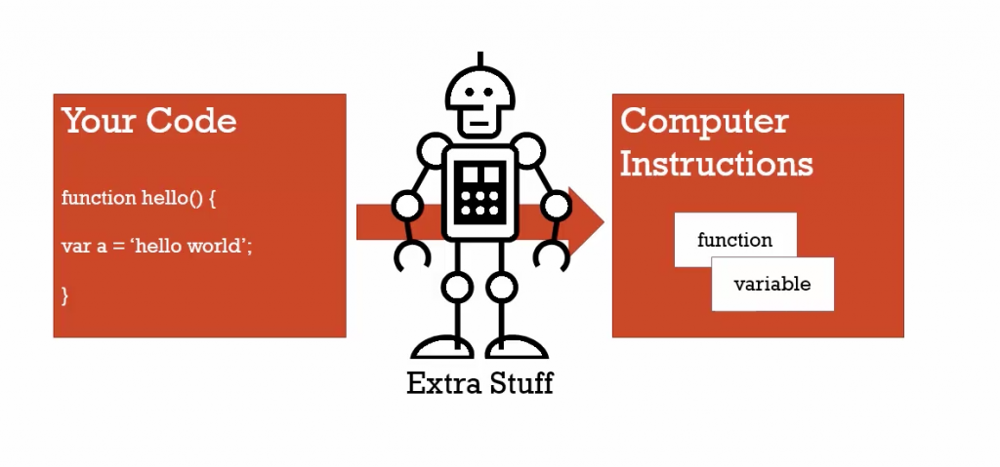

Thực sự, bạn không cần biết những khái niệm như Syntax Parser, Execution Context, Lexical Environment là gì vẫn được. Tuy nhiên, nếu bạn muốn hiểu rõ chính xác điều gì đang diễn ra khi code bạn chạy ( đương nhiên vẫn dễ hiểu hơn mã máy nha ) thì các bạn cần phải giải thích được những thuật ngữ khô khan này.
Ngoài ra , những thuật ngữ nền tảng này sẽ theo bạn xuyên suốt quá trình học và làm việc với Javascript sau này. Để hiểu những khái niệm khác như: hoisting trong Javascript (Creation Phase vs. Execution Phase), từ khóa this, array functions thì bạn nên hiểu Syntax Parser, Execution Context, Lexical Environment là gì trước.
Điều đầu tiên, hãy tìm hiểu chuyện gì sẽ xảy ra khi chúng ta khởi chạy trang web trong trình duyệt. Bất cứ khi nào chúng ta tải tệp tin của chúng ta trong trình duyệt, một chương trình được gọi là Syntax parser sẽ đọc code của chúng ta, kiểm tra `ngôn ngữ` và đảm bảo code của chúng ta hợp lệ. Hãy tưởng tượng có một ai đang đọc bài luận của bạn, giúp bạn kiểm tra ngữ pháp và xác định lỗi chính tả, nhưng trong trường hợp của chúng ta là code hay đoạn mã ta viết.
Sau đó, một chương trình khác được gọi là compiler translates ( trình biên dịch ) dịch mã của chúng ta sang thành một ngôn ngữ máy có thể hiểu và tiêu hóa được. Bởi vì Javascript là một ngôn ngữ thông dịch hơn là một ngôn ngữ được biên dịch. Không giống như anh chị em của mình Java. Quá trình biên dịch này được gọi là biên dịch JIT (Just-In-Time), dịch hay còn gọi là dịch động.
